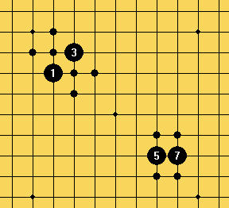

教你如何论证斜线比直线强
#1 教你如何论证斜线比直线强作者：江南新绿 发表时间：2008-12-23 12:31:04
=======上图对应的爱五子棋谱代码如下，以便你拆解：========
a11o1b12o2c13o3d14o4e15o5f14n5g13m5h12l5i11k5h10k4g9k3f8k2e7k1d8l1c9m1b10n1
======================================================
五子棋斜线攻击的确比直线攻击来的强。但很少有人能说出所以然来。今天就和大家共同学习一下理论。
以往有两种理论是错误的，一种用多少棋子去防守一条斜线。结论是反击也是一种防守，直线斜线不分上下。还有一种理论是，有多少棋子去联系单一直线或单一斜线上的棋子。和第一种理论有些类似。而且结论也是不分上下。
最新的理论是这样的：斜线所围的面积比直线所围的面积来的大。那么就证明了单一斜线作用的区域比单一直线作用的区域来的大。
ShowPost.asp?ThreadID=4494例子中的11，5和7，15的平行双斜线也是五子棋常见的行棋方式，而直线的似乎没有这样的例子。
［ 有志青年 于 2008-12-23 13:09:03 时奖励此帖[金币加 20 威望加1］
#2 Re:教你如何论证斜线比直线强作者：无尽 发表时间：2008-12-23 14:36:46
觉得说服力还是不够哦。
以前看过浙江董伟伟LS的文章，关于那个“一层关联点”的，有点启发。
我认为问题就是出在这里，能同时与两子构成活2的点，斜2比直2的可能点多出2个，因此更具拓展性，威胁更大，白要把成二的可能性都封住，显然斜2比直2花费多。

#3 Re:教你如何论证斜线比直线强作者：萧寒寒 发表时间：2008-12-23 14:57:08
觉得楼上更有说服力
#4 Re:教你如何论证斜线比直线强作者：无尽 发表时间：2008-12-23 15:21:32
有道理~~ 主要是活2是能够产生先手的子力，效率最高
其实我所说的也算不上证明，只不过觉得关键可能在这里面
而且斜2比直2强更多是必胜局面中的经验，要是在棋盘上可以随机布同等防守方子力的情况下（就是楼上说的具体局面）证明斜2比直2强我没想到有什么方法。
我觉得新绿说 斜线比直线强 似乎是个伪命题，因为脱离了子力和效率（先手）就不成立了。
#5 Re:教你如何论证斜线比直线强作者：无尽 发表时间：2008-12-23 15:49:10
楼上最后的结论比较合理了
我在想是不是把某些局部的经验当作普遍性的了，所以才会产生斜线上的子力（斜2）比直线上的子力（直2）拓展性更强（更有效率的意思）的看法。
而3楼中是某种理想状态下的看法。
#6 Re:教你如何论证斜线比直线强作者：上海PL囡囡 发表时间：2008-12-23 16:10:21
研究证明：开局阶段直线比较强，中盘阶段斜线比较强。
这也是直指平衡局比较多，斜指平衡局少的原因（因为直指黑一开始就少了条直线）。大量优势局的必胜，则跟中盘黑制造强有力的斜线有关。
#7 Re:教你如何论证斜线比直线强作者：江南新绿 发表时间：2008-12-23 17:19:32
3楼的图似乎画的有问题吧，右下角的5和7的斜方向上怎么就不画了？
我在一楼就排除了棋型的组合方式与斜线、直线的关系的论证。楼上的几位不知道看懂了没？
我的意思很明确：作用区域大的进攻方式更加适合于复杂的局面，更适合耐久性的战斗。
#8 Re:教你如何论证斜线比直线强作者：无尽 发表时间：2008-12-23 18:31:14
楼上没看懂3楼的图和不明白我3楼的意思哦
#9 Re:教你如何论证斜线比直线强作者：江南新绿 发表时间：2008-12-24 13:54:40

#10 Re:教你如何论证斜线比直线强作者：来客沙丝 发表时间：2009-3-12 20:37:38
都是高手，够我学的。对于新手，3楼的意思更好理解和运用。
#11 Re:教你如何论证斜线比直线强作者：馒头馒头 发表时间：2009-10-12 11:42:16
片面了~DO YOU NOW?
#12 Re:教你如何论证斜线比直线强作者：七星剑 发表时间：2009-10-30 9:29:51
lz看清楚了，能同时与两子构成活2的点，斜线确实多两个#13 Re:教你如何论证斜线比直线强作者：无尽 发表时间：2009-10-30 22:49:12
ms 斜线比直线强是个伪命题了
不过理论上斜活二的确比直活二拓展性更强，但最终要放在具体局面计算选择。假如对方没什么进攻材料的话，先考虑斜的
#14 Re:教你如何论证斜线比直线强作者：左伟光 发表时间：2010-1-9 7:14:06
个人观点：
斜线拓展空间的能力强，而直线防守则严密。仅从斜直来说强弱有些牵强。
#15 Re:教你如何论证斜线比直线强作者：许相公 发表时间：2010-1-11 11:28:16
 围棋斜线是势，直线是实；五子棋斜线直线都是实
围棋斜线是势，直线是实；五子棋斜线直线都是实